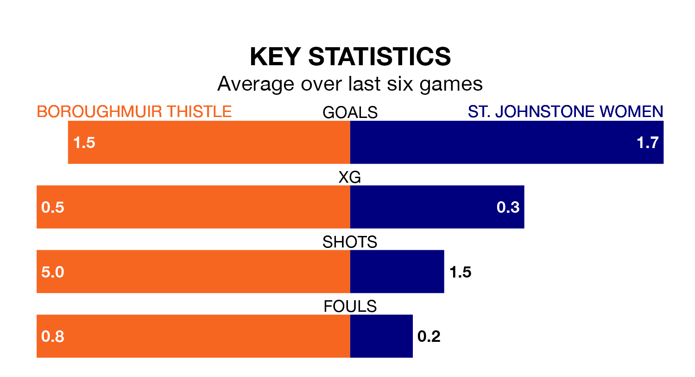

Relegation candidates St. Johnstone Women face a challenge away against high-flying Boroughmuir Thistle at the Meadowbank Stadium on Sunday.
St. Johnstone Women are fifth in the SWPL 2 table, and have picked up nine wins and one draw in their 25 games to date.
Boroughmuir Thistle, meanwhile, are fourth in the standings with 35 points, having won nine and drawn eight, and are 30 points behind table-toppers Queen's Park Women.
With 47 goals in 25 games so far this season, St. Johnstone are the league's third-highest scorers with 1.9 goals per game. But they are conceding more than average too, letting in 51 goals at a rate of 2.0 per game.
Boroughmuir Thistle, meanwhile, are average scorers, with 1.8 goals per game. They have conceded 1.1 goals per game.
In the last 10 years, Boroughmuir Thistle and St. Johnstone have played each other on 13 occasions. Boroughmuir Thistle won six of them, St. Johnstone two, and they drew five times.
On average, Boroughmuir Thistle scored 1.8 goals and St. Johnstone 1.3 in those matches.
Their last meeting was on March 3, when they played out a 0-0 draw.
The home side are in disappointing form in SWPL 2, with one win and three draws from their last six games.
With two wins and four losses over that period, the visitors' form is similar – they have both taken six points from 18.
Boroughmuir Thistle's last match was on Wednesday, a 4-0 win against Stirling University Women, with getting the goals for Boroughmuir Thistle.
St. Johnstone lost 1-0 against Queen's Park Women last time out, also on Wednesday.
Updated: 12:00 (UTC), 02/05/24